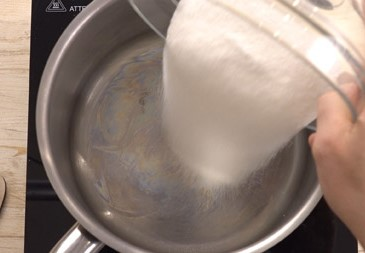
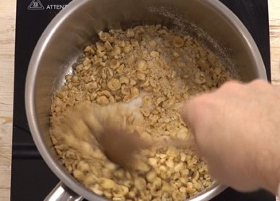
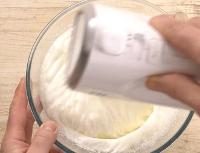
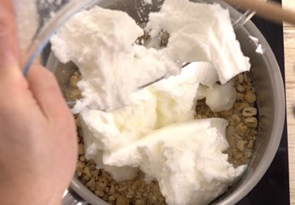
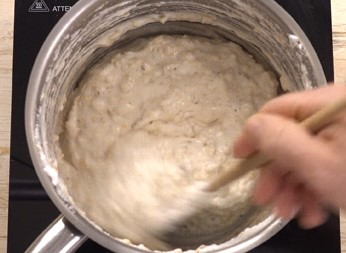
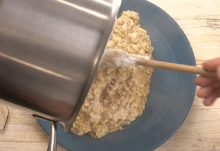
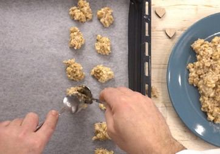
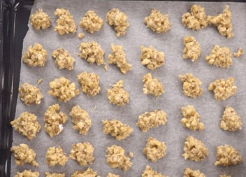
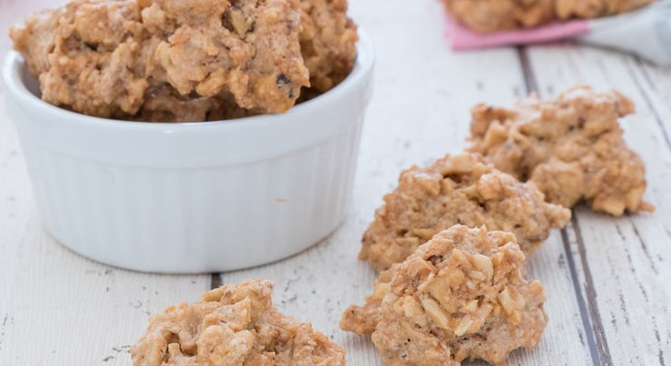

| Cenere® |
Brutti ma BuoniOriginiL’origine dei brutti ma buoni non è certa: alcuni li vedono nascere nel 1878 per mano di Costantino Veniani a Gavirate in provincia di Varese, altri ne rintracciano le origini in Piemonte e precisamente a Borgomanero, altri ancora in Emilia Romagna o nella zona di Prato. Ricetta
IngredientiPer la base
Preparazione dei Brutti ma BuoniImpastoIn un pentolino versiamo a fuoco spento, lo zucchero semolato, poi vi uniamo le nocciole tritate grossolanamente.
  A parte montiamo a neve ben ferma gli albumi e li incorporiamo agli altri due ingredienti, mescolando delicatamente.
 
Accendiamo il fuoco a fiamma media e facciamo cuocere, continuando a mescolare in modo che non si attacchi sul fondo,
finché il composto non si rapprende e diventa più denso e di colore leggermente più scuro.
  Cottura
Con l'aiuto di due cucchiai, prendiamo poco impasto per volta e disponiamolo a mucchietti su una teglia rivestita
con carta da forno.
  Lasciamoli raffreddare prima di staccarli dalla carta da forno e sono pronti per essere serviti.
 ConservazioneI brutti ma buoni si conservano per 7-8 giorni, chiusi in una scatola di latta. Si sconsiglia la congelazione. |